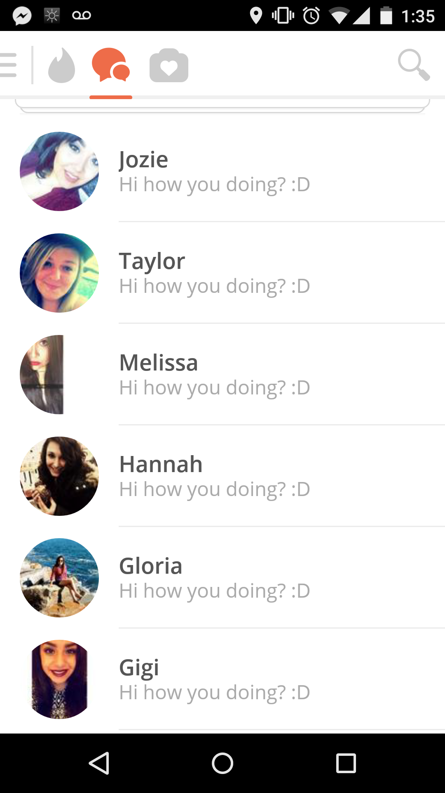
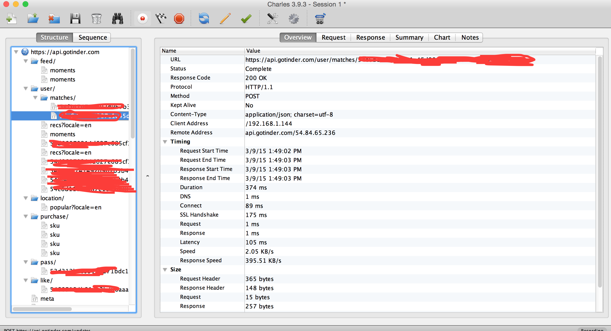
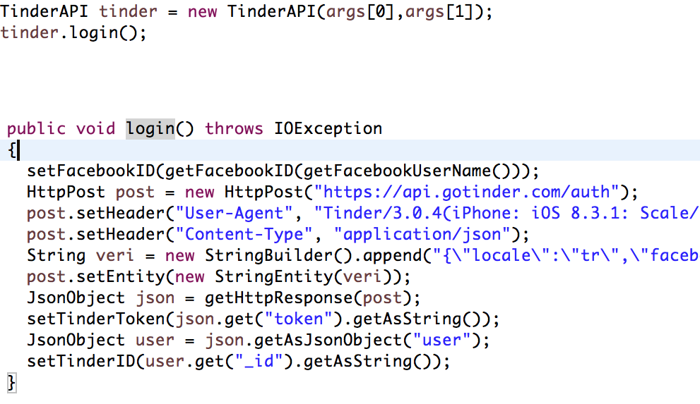
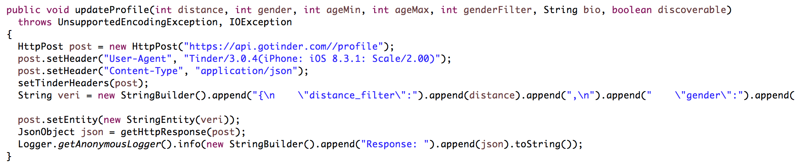
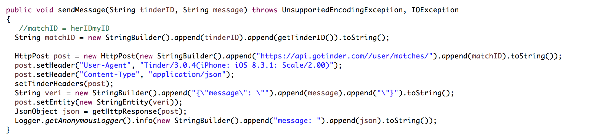
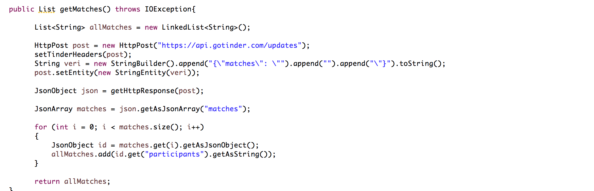
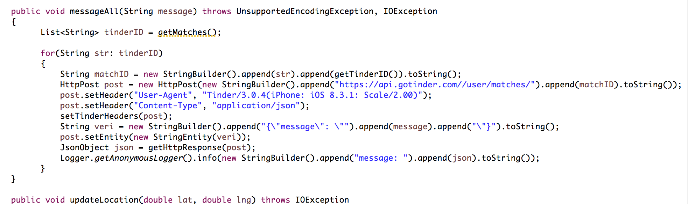
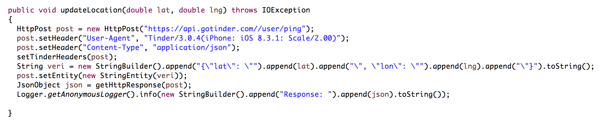
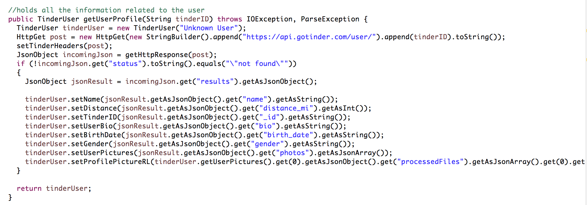

This is my first post, blog, whatever. I'm actually new to all this. Should I do an introductory post so you can know a little about my background? This is a lazy Sunday, and I don't feel like doing it right now, but let me know if you would like to know more about me.
Tinder is a popular dating app right now, and has a lot of users including some of my friends that spend a significant amount of time swiping and messaging random girls. Personally, I don't use it because I have better things to do that trying to talk to random girls that I don't even know if they are real about insignificant topics, but that's just a personal opinion. If you like and it works for you, keep doing your thing.
Ok, it all started because I wanted to make some money by doing an app that would automate Tinder by liking all the people around you, and sending the same message to all your matches. Unfortunately, I was not able to complete the app because of one small thing. I couldn't automatically get Facebook's Token for Tinder's API for the user. However, I managed to do some reverse engineering to send the same message to all your matches, liking all people around, changing your profile settings for example: your location, description, etc.
In this screenshot you can see

This does not prove anything because anyone can send the same message to all their contacts, and claim that they automated it, buuuuuuuut there's a video showing how this is actually real later on this post.
So, how did I start?
I did not know anything about reverse engineer before this, but watching some tutorials, tinder hacking/bots, and reverse engineer gave me the necessary tools. I used Java for this (probably not easiest language to do this).
Now let's actually start explaining what I did!
First, I downloaded a Web Debugging Proxy, which is called Charles proxy. Manually connected my phone to my computer's ip address, and started to debug what was going on in tinder's api. From there you can see what happens when you login, when you like a person, send a message, change the settings, etc. It looks something like this.
 Yeah, I'm awesome at editing images.
After that I discovered what actions needed GET or POST, and started the Java programming using Eclipse. First of all I uploaded my code to Github, which you can download from here https://github.com/BCerecer/TinderHackJava
I did not explain that much on Github, but I'll explain everything here ;)
Before we begin you need some to import some libraries for Eclipse like httpclient, gson, etc. You can figure this out, if not just contact me.
The first part is self explanatory, actually is all pretty simple to understand. Ok, so a tinder object is created where you have to pass your Facebook's Token (I hate you toke!), and your Facebook id.
To get the Facebook's token just click this link, and it will redirect you to another url that only appears for 5 seconds, which you have to be quick to copy! and then it give leads you to success screen. Don't worry if you weren't fast enough to copy the url you can try it again.
The url sthat you have to copy looks something like this: https://www.facebook.com/connect/loginsuccess.html#accesstoken=YOUR TOKEN ARE A MANY CHARACTERS HERE &expiresin=5965
and your facebook id can easily be obtained because is your vanity url. For example, let's say that my facebook is facebook.com/blablabla, my id would be blablabla.

The login method authenticates your tinder profile in tinder's api by using your the provided information about your facebook.
Beginner's fact: APIs work with JSON objects, which I think it stands for JavaScript Object Notation.
By the way, this thing of writing blogs is tiring!
Let's continue...
Give the information, and update your profile. For int gender/genderFilter male is 0, female 1, and -1 male and female. Everything else is self explanatory.

In case you want to send a message to only one match.

Returns a list with the matches in it.

Send the same message to all your contacts.

Redundant

Redundant

Here is a video sending the message to all my matches:
That's pretty much all, for any question contact me.